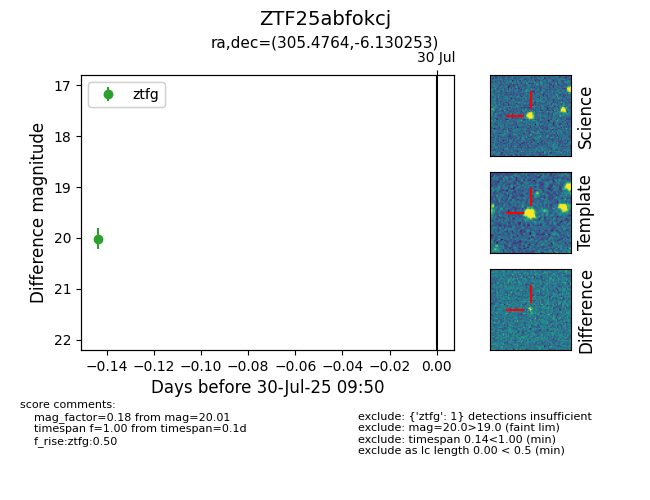

Target ZTF25abfokcj at 2025-07-30 09:50, see:
FINK: fink-portal.org/ZTF25abfokcj
Lasair: lasair-ztf.lsst.ac.uk/objects/ZTF25abfokcj
ALeRCE: alerce.online/object/ZTF25abfokcj
alt names
ZTF25abfokcj (ztf,fink)
coordinates:
equatorial (ra, dec) = (305.4764,-6.13025)
galactic (l, b) = (37.8708,-22.89214)
photometry
last ztfg=20.01
1 ztfg detections
